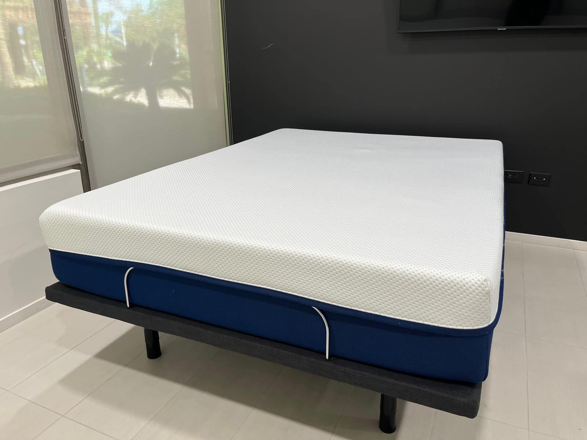
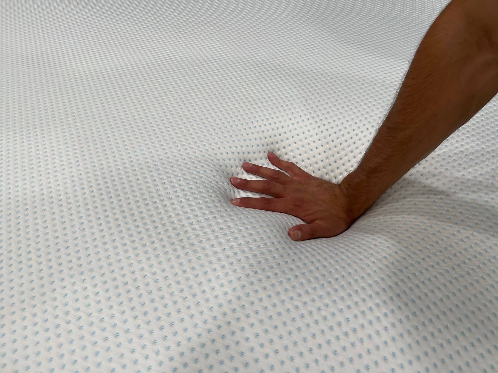
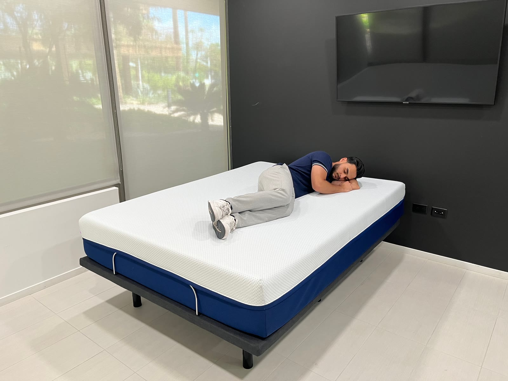
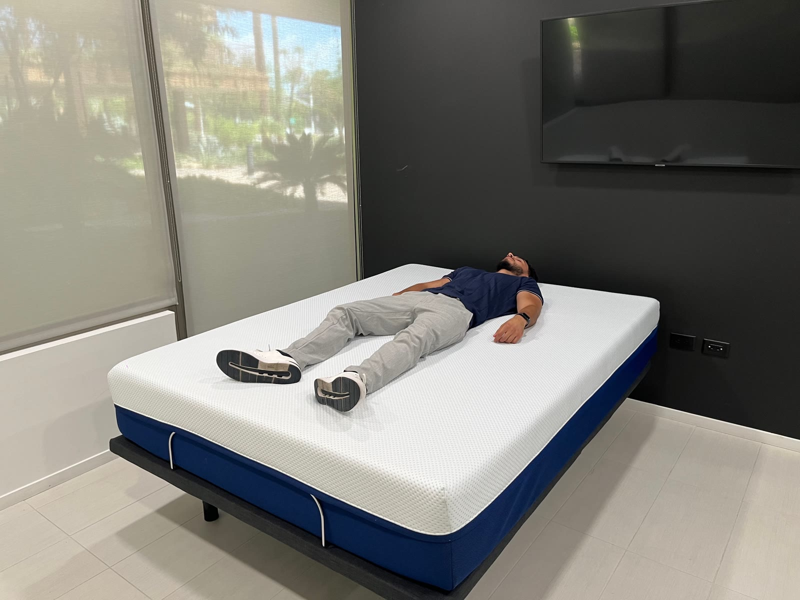
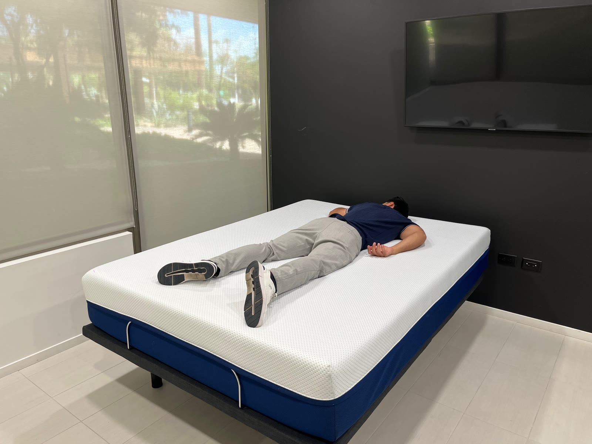
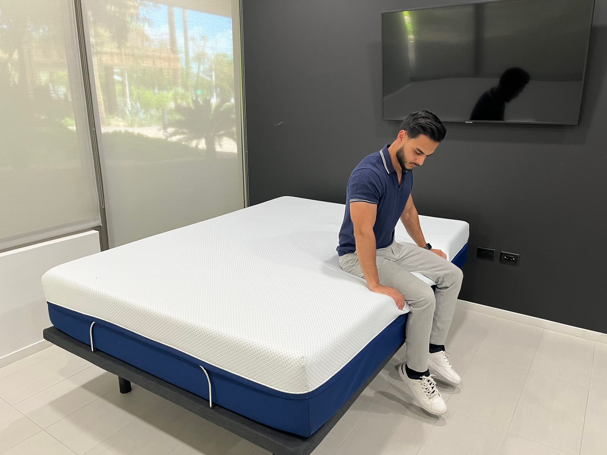
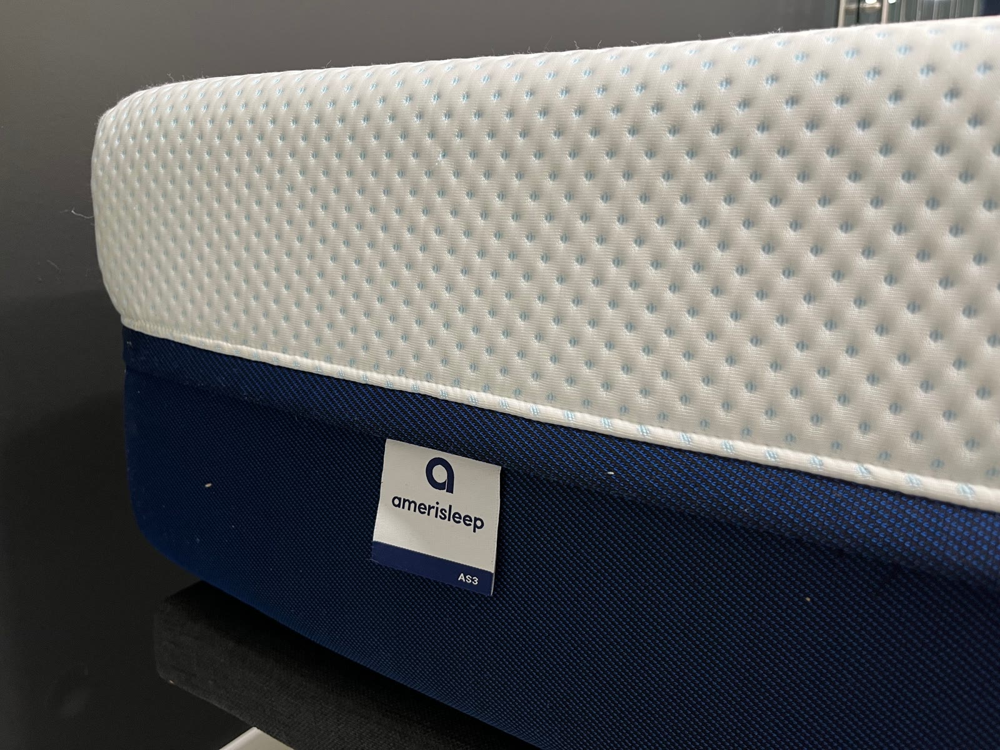

/mattress-reviews/amerisleep-as3/. Final launch still requires WordPress publish, schema render, media upload, redirects, and live QA.
Amerisleep AS3 Mattress Review
By Firdous “Ferdie” Farhad | Lead tester: Firdous “Ferdie” Farhad | Updated June 19, 2026
Ferdie authors Simply Rest Lab mattress content from a first-hand, hands-on testing perspective, using pressure relief, spinal alignment, motion isolation, cooling, edge support, response, setup, and comfort observations to support each recommendation.
Simply Rest Lab Score: 10/10 | Lead tester: Firdous “Ferdie” Farhad | Best for: most sleepers, couples, side sleepers, back sleepers, and combination sleepers.
The Amerisleep AS3 is one of the strongest all-around mattresses in the Simply Rest Lab score database. It earns high marks for pressure relief, motion isolation, edge support, cooling, and overall sleeper compatibility.
Disclosure and Review Limits
Affiliate disclosure: Simply Rest may earn a commission when readers buy through some links. This review should keep commercial CTAs separate from the scoring explanation and tie recommendations back to testing evidence, product facts, and the Simply Rest Lab methodology.
This mattress review is not medical advice. We discuss comfort, support, pressure relief, cooling, and sleeper fit, but we do not diagnose, treat, cure, or guarantee relief for pain, sleep disorders, or medical conditions.
Quick Verdict
The AS3 is a strong fit for shoppers who want a balanced foam mattress that cushions pressure points without feeling overly soft or restrictive. It is especially useful for side sleepers, back sleepers, couples, and people who want one mattress with broad appeal.
Strict stomach sleepers or shoppers who prefer a very firm mattress may want a firmer model.
Scorecard
| Category | Score | What it means |
|---|---|---|
| Overall | 10 | Excellent all-around performance. |
| Value | 9 | Strong performance relative to category and expected price range. |
| Edge Support | 10 | Stable perimeter for sitting and lying near the edge. |
| Trial Period | 9 | Buyer-friendly trial policy. |
| Response Time | 9 | Responsive enough for easier position changes. |
| Motion Transfer | 10 | Excellent motion isolation for couples. |
| Cooling & Breathability | 10 | Strong cooling and airflow performance for a foam mattress. |
Testing Evidence
Firdous "Ferdie" Farhad tested the Amerisleep AS3 using Simply Rest Lab checks for pressure relief, edge support, response time, motion transfer, and sleep-position fit. These photos and clips are the approved first-hand evidence assets for this review.

Pressure Relief
The AS3 is designed to sit in a medium-feel range, which may make it a better fit for shoppers who want cushioning at the shoulders and hips without an overly soft feel.

Spinal Alignment
Sleep-position testing helps show how the AS3 supports side, back, and stomach positions. These observations are comfort and fit notes, not medical claims.



Motion Isolation
The AS3 earns a 10 for motion transfer in the current score table. Foam construction can help absorb movement before it travels across the mattress, which is useful context for couples and restless sleepers.
Edge Support
The AS3 scores a 10 for edge support in the current score table. Edge testing checks sitting and lying stability near the perimeter, which helps show usable sleep surface and how secure the edge feels.

Cooling and Breathability
The AS3 scores a 10 for cooling and breathability in the current score table. The review should keep any cooling claim tied to material notes, surface feel, visible testing, and available observations.

Best For
- Side sleepers who want pressure relief without a very soft feel
- Back sleepers who like a balanced foam mattress
- Couples who need strong motion isolation
- Combination sleepers who change positions
- Shoppers looking for a broad all-around pick
Consider Another Mattress If
- You want an extra-firm mattress
- You are a strict stomach sleeper who needs more lift
- You prefer the bounce of a hybrid mattress
- You want a very plush pillow-top feel
Bottom Line
The Amerisleep AS3 is one of the best all-around mattresses in the Simply Rest Lab dataset. Its strongest case is balance: pressure relief, motion isolation, edge support, cooling, and broad sleeper compatibility in one foam mattress.
For more on the testing process, see How We Test Mattresses.
Ferdie’s First-Hand Testing Notes
Ferdie’s first-hand testing notes cover pressure relief, spinal alignment, motion isolation, cooling, edge support, response time, setup, and long-term comfort. Each note is tied to the matching Simply Rest Lab photo or clip so readers can see the evidence behind the score.
- Pressure relief: shoulder, hip, and lower-back response.
- Spinal alignment: side, back, and stomach position support.
- Motion isolation: movement transfer and partner-disturbance risk.
- Cooling: cover feel, airflow, and thermal comfort notes.
- Edge support: sitting and lying edge compression.
- Response time: bounce-back and ease of movement.
- Evidence: matching Simply Rest Lab photo or clip.
Methodology link: How Simply Rest Lab tests mattresses.
Amerisleep AS3 FAQ
What is the Amerisleep AS3 best for?
The AS3 is best for shoppers who want a balanced foam feel, broad sleeper compatibility, strong motion isolation, and pressure relief without an extremely soft feel.
Who may want to skip the Amerisleep AS3?
Strict stomach sleepers, shoppers who want an extra-firm mattress, and people who prefer a bouncier hybrid feel may want a different model.
How was the Amerisleep AS3 scored?
The AS3 score uses the Simply Rest scoring matrix, with a 10/10 Overall score and category scores for value, edge support, trial period, response time, motion transfer, cooling, and breathability.